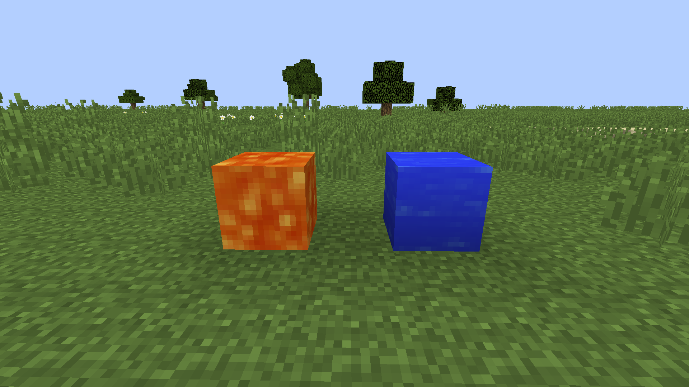

How to get it
To get Obsidian in Minecraft, you need lava, water, and a diamond pickaxe. First, find a source of lava, such as a lava pool or a lavafall underground. Then, pour water over the lava to turn it into Obsidian. After that, use a diamond pickaxe to mine the Obsidian blocks. Be careful, as mining Obsidian takes a long time and lava might be underneath. Once you collect the Obsidian, you can use it to build Nether portals or other strong structures.

Obsidian is one of the strongest blocks in Minecraft. It is mainly used to create Nether portals and enchantment tables. You cannot mine it without a diamond or netherite pickaxe. If you try using a weaker tool, the block will break but drop nothing. Obsidian also has a high blast resistance, making it great for protection. Many players use it to build secure bases or traps.
